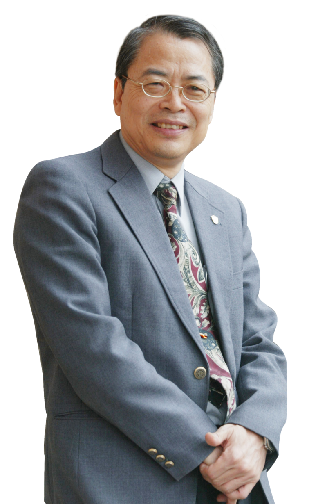
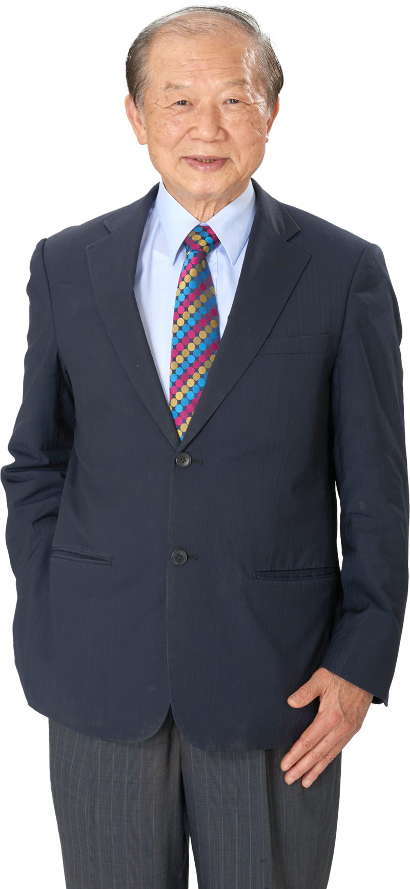
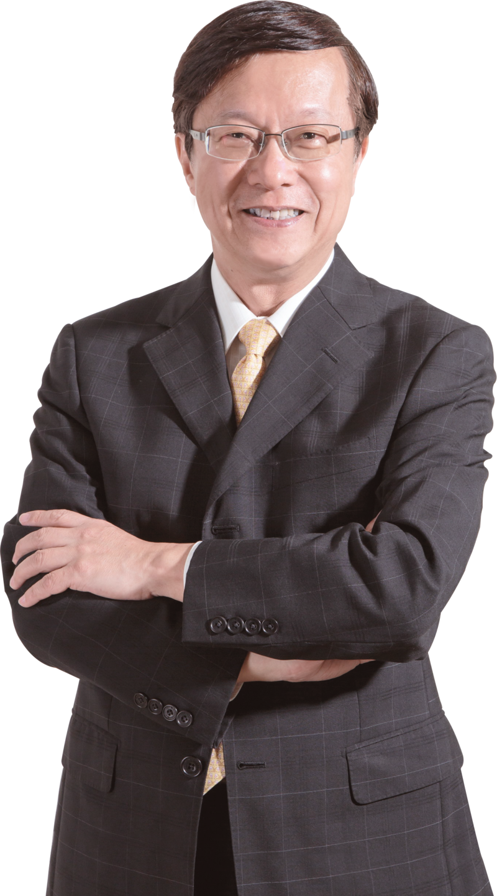
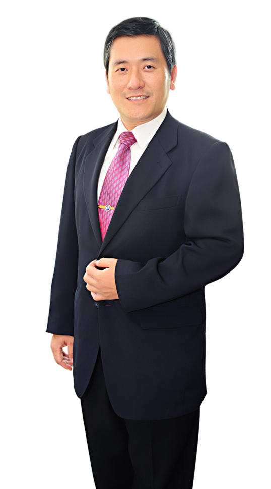

Đội Ngũ Nghiên Cứu và Phát Triển Trung Tâm Nghiên Cứu Khoa Học Tiên Tiến Toàn Cầu T&E GLOBAL

Tiến sĩ Vương Minh Phú
Thạc sĩ Dinh dưỡng học / Tiến sĩ Sức khỏe, Khoa Y, Đại học Quốc lập Tokushima, Nhật Bản
Chuyên môn nghiên cứu: Dinh dưỡng người cao tuổi; Dinh dưỡng sức khỏe; Sinh lý dinh dưỡng; Hóa sinh lâm sàng; Dinh dưỡng lâm sàng, Dược lý học

Tiến sĩ Tạ Minh Triết
Tiến sĩ, Viện Nghiên cứu Hóa học Nông nghiệp, Đại học Đài Loan
Chuyên môn nghiên cứu: Dinh dưỡng học, Hóa sinh dinh dưỡng, Chuyển hóa lipid và vitamin

Tiến sĩ Thái Anh Kiệt
Tiến sĩ Vi sinh vật học, Đại học Tokyo, Nhật Bản
Chuyên môn nghiên cứu: Hóa sinh học, Vi sinh vật học, Liệu pháp hương thảo dược

Tiến sĩ Chu Minh Vũ
Tiến sĩ Khoa Dinh dưỡng Thực phẩm, Đại học Tĩnh Nghi; Tiến sĩ Học viện Quản lý, Viện Khoa học Trung Quốc (Bắc Kinh)
Chuyên môn nghiên cứu: Quản lý kinh doanh, Tiếp thị tích hợp, Quản lý ngành giải trí, Sáng tạo văn hóa, Lập kế hoạch và thực hiện sự kiện và thông tin máy tính, 55 chứng chỉ chuyên nghiệp trong và ngoài nước

Tiến sĩ Hosoda Kazuaki
Tiến sĩ Khoa Dinh dưỡng, Khoa Y, Đại học Quốc lập Tokushima, Nhật Bản
Chuyên môn nghiên cứu: Dinh dưỡng học, Dinh dưỡng lâm sàng, Sinh lý dinh dưỡng, Dược lý học, Hóa sinh học